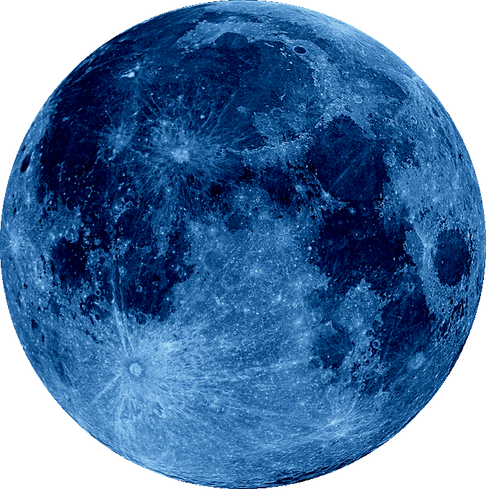

-About 4 billion years ago, a gigantic space rock the size of Mars collided with our planet. As a result, a
huge chunk of the Earth broke away and later became our satellite, the Moon.
-Researchers say that since the 19th century, the northern magnetic pole has shifted about 685 miles, moving
northwestward across the Canadian Arctic.
-One of the gravitational anomalies is found in Canada’s Hudson Bay, where gravity is much weaker than
anywhere else on the planet.
-Some scientists believe that our planet used to have an additional satellite that crashed into our main
satellite later on.
-Earthquakes on the Moon are much deeper and closer to the center of our satellite, about halfway between the
surface and the core.
-About 20 million tons of gold can be found inside our very own planet and in the seas.
-Dr. Shil DasSarma, a microbial geneticist from the University of Maryland, thinks that ancient microbes
probably didn’t use chlorophyll but other molecules to process sunlight and our planet used to be purple.
If measured from the very bottom on the ocean floor to the peak, Mauna Kea is 33,000 feet tall, making it,
technically, the tallest mountain on the planet.
-Nyos, Monoun, and Kivu are crater lakes in Africa that are located over volcanic earth.
-The most powerful eruption ever recorded happened in April 1815 in Indonesia. It was ranked a 7 (or
“super-colossal”) on the Volcanic Explosivity Index.
India
- If you think plastic surgery is a modern convenience, you’re up for a big surprise. India had it covered
more than 2,500 years ago, way back in the 6th century B.C.E.!
- Up until the early 18th century, India was the only source of diamonds in the world. According to the
Gemological Institute of America, these precious stones were first discovered and traded in the 4th century
B.C.E.
- Civilized urban life as we know it dates back about 5,000 years in India. The Ancient History Encyclopedia
says that, by 2600 B.C.E., dozens of towns and cities belonged to that civilization.
- Speaking of better social conditions, during the Vedic period, which lasted from about 1500 to 500 B.C.E.,
the Indian society was probably the most equal in the known world at that time.
- The concept of “zero” and the rules of its use were first invented in India at around the 7th century C.E.
Before that, the idea of “nothing” hadn’t even been treated as a number.
- “Shampoo” is derived from the Hindi word “champo,” which means “to massage” or “knead.” And the first
mention of this “head kneading” was by Greek historian Strabo back in the 4th century B.C.E.
- One of India’s greatest minds lived in the 5th century C.E. His name was Aryabhata, and he wrote a treatise
on astronomy that became a foundation for many later studies.
- Do you play chess? Even if you don’t, you know what it is. But did you know that its ancestor was born in
India too? The ancient game was called chaturanga, and it appeared at around the 6th century C.E.
- India wasn’t always a “subcontinent.” In the era of dinosaurs, over 100 million years ago, it was actually
an island! It had broken off from a supercontinent and slowly but steadily traveled north, arriving to its
present-day location in just about 50 million years.
Space
- The Solar System is 4.6 billion years old! So old, it’s a Senior Solar System.
- Wanna get away? You'll have to travel 11 billion miles away from Earth before even leaving the Solar System.
- The Planet Uranus or Uranus – you can’t win either way -- rotates on its side, and astronomers have no idea
why the planet has chosen such an unusual position.
- Our Sun is insanely massive! Want some proof? Well, 99.86% of all the mass in the Solar System is the mass
of the Sun - in particular, the hydrogen and helium it's made of.
- Earth might not be the only tectonically active planet in the Solar System. Astronomers have spotted some
landforms looking like cliffs on Mercury!
- Behind the orbit of Neptune, lies the mysterious Kuiper Belt, filled with massive icy objects. The most
curious thing about this space formation, though, is that scientists can’t explain the pattern of its movement.
- While we have volcanoes spilling lava on our planet, the volcanoes on Pluto spit... ice!
- One of Saturn's moons, Lapetus, has a unique color - it's two-toned. One of its hemispheres is light, and
the other is eerily dark.
- The Sun's atmosphere stretches far beyond its visible surface. And our planet is right within its reach.
- The Sun's atmosphere is hotter than the surface of the star. While on the surface, the temperatures reach
10,000 degrees F, the upper atmosphere heats up to millions of degrees!

- Our Solar System isn't the only one in the Milky Way Galaxy. Far from it, the galaxy we live in houses about
100 billion solar systems!
- Since Mercury is the closest planet to the Sun, many people simply assume that it's also the hottest. And
that's where they get it wrong because, in fact, Venus (which is about 30 million miles further from the Sun
than Mercury) is way hotter!
The most enormous volcano in the whole Solar System (at least, that we know of) is on Mars!
- The valley called Valles Marineris, on Mars, is more than 10 times larger than Earth's Grand Canyon.
- On the surface of Jupiter, there’s a weird region that's called the Great Red Spot. Recently, astronomers
have concluded that this spot is actually a storm that’s been raging on the planet for centuries.